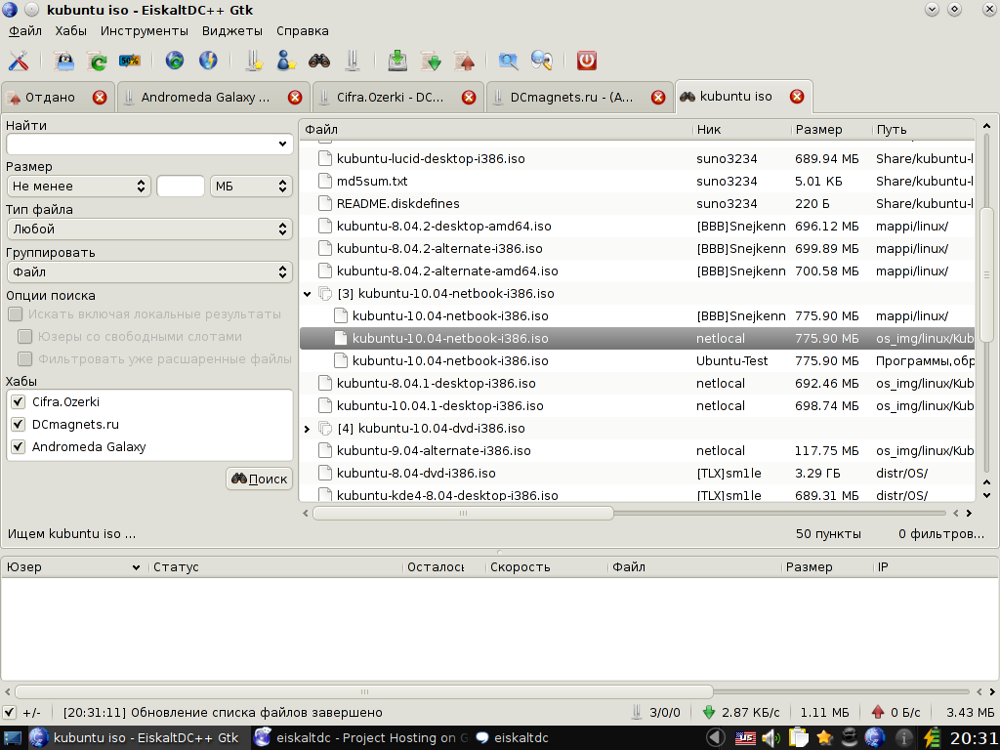
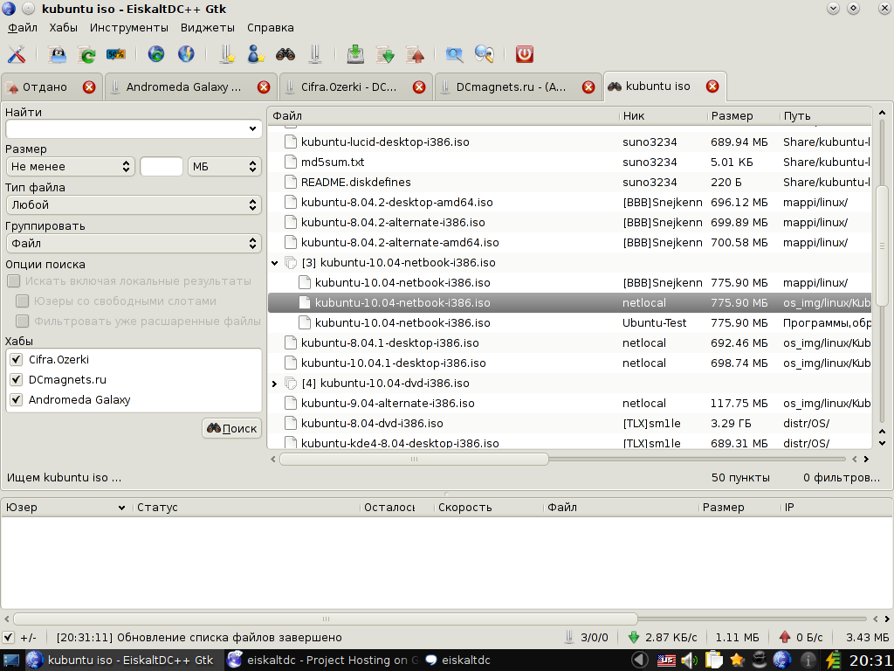

EiskaltDC++ — пакеты для Debian GNU/Linux и Ubuntu
Создано: 2010-02-11Обновлено: 2013-08-29
Описание:
EiskaltDC++ (не путать с EiskaltDC) — это наследник EiskaltDC лишь формально, код полностью переписан. Программа кроссплатформенная: поддерживаются сборки под Linux, FreeBSD, Mac OS X, MS Windows и Haiku.
Зимой 2009/2010 возникла потребность в миграции на ядро DC++ (ранее использовалась крайне ограниченная и несовместимая библиотека dclib из клиента Valknut). Код клиента был полностью переписан, интерфейс основан на Qt4 и внешне максимально приближен к оригинальным клиентам DC++, название было изменено с EiskaltDC на EiskaltDC++.
По сути, EiskaltDC++ стал графической оболочкой на Qt4 для модифицированного ядра DC++. Так же как LinuxDC++ и его форк FreeDC++ — графические оболочки на GTK+. Подавляющее большинство клиентов под MS Windows (оригинальный DC++, StrongDC++, ApexDC++, PelinkDC++, FlylinkDC++, Greylink и другие) тоже основаны на ядре DC++. Благодаря переходу на эту библиотеку, EiskaltDC++ стал поддерживать не только протокол Direct Connect (en), но и протокол Advanced Direct Connect (en), который идет ему на замену. Переход на ядро DC++ существенно упростил обмен патчами с другими проектами.
Начиная с версии 2.1.0 в клиенте дополнительно поддерживается Gtk интерфейс (на основе FreeDC++ и LinuxDC++).
Начиная с версии 2.2.0 в клиенте дополнительно поддерживается daemon с нимимально необходимым функционалом и возможностью дистанционного управления через JSON-RPC или XML-RPC.
Журналы изменений: ChangeLog.txt, ChangeLog_ru.txt и ChangeLog_uk.txt.
Активность разработки (графики): network, graphs.
Активность разработки (коммиты): master, 2.2.x
Активность в багтрекере: недавние изменения.
 

EiskaltDC++ 2.1 (beta3). в Debian GNU/Linux (Sid), графическая среда — KDE-4.4.5
Для Qt-интерфейса (слева) и для Gtk-интерфейса (справа) используется тема QtCurve
Информация о разработке:
Основное обсуждение ведется в jabber конференции: eiskaltdc@conference.gentoo.ru (логи: календарь, каталог)
Список участников проекта: на code.google.com и на github.com
Список авторов программы: authors
Блог проекта на Open-Life.org
Так же, у проекта есть git-зеркало на gitorious.org и отдельная страница на qt-apps.org
Вы можете использовать RSS для наблюдения за некоторыми изменениями. Например, в разделе Downloads.
Внимание: разработка программы переведена на github.com
Получить последние версии исходников можно так:
* git clone --depth 1 git://github.com/eiskaltdcpp/eiskaltdcpp.git
* wget -4 -c https://nodeload.github.com/eiskaltdcpp/eiskaltdcpp/tar.gz/master
* svn export http://svn.github.com/eiskaltdcpp/eiskaltdcpp/ eiskaltdcpp
Главная страница проекта, багтрекер и wiki по прежнему размещены на code.google.com.
Выход корректирующего релиза EiskaltDC++ 2.2.9 состоялся 29 августа 2013 года. Следующий релиз EiskaltDC++ 2.3.0 запланирован на сентябрь 2013 года.
Информация об изменениях (en, uk):
Общие изменения
* Исправлена сборка с GCC < 4.6 и Clang < 3.1. Это последний релиз с поддержкой старых компиляторов.
* Исправлены правила cmake для сборки с локализаций sr@latin.
eiskaltdcpp-qt
* Улучшения в виджете поиска: теперь индикатор прогресса работает как ожидалось.
* Исправлено падение программы по правому клику на некоторых никах пользователей в групповых чатах.
* Исправлен SIGABRT при закрытии QML виджета Tic-Tac-Toe.
* Исправлен SIGABRT при выходе из программы, когда QtScript "LogManager View" является активным.
* Ряд усовершенствований для Mac OS X, связанных с иконкой в доке.
eiskaltdcpp-gtk
* Улучшения в виджете поиска: теперь индикатор прогресса работает как ожидалось.
* Исправлен SIGABRT, когда gdk_display_get_default() возвращает NULL.
eiskaltdcpp-daemon
* Исправлена проверка существования лог-файла при работе в режиме демона (см. опции коммандной строки --syslog и --log).
eiskaltdcpp-cli
* Исправлена работа с libjson-rpc-perl >= 1.00 (модуль JSON::RPC::Client был перемещен в JSON::RPC::Legacy::Client).
В грядущих релизах запланировано (TODO):
* IPv6 в ядре DC++
* Улучшение поддержки Lua-скриптов
* Замена кода с Boost на C++11 везде где это возможно.
* Поддержка сборки с Qt5.
* Удаление устаревших элементов Gtk 3.x.
* Диалог настроек антиспама для Gtk интерфейса.
Достаточно подробный список с возможностями программы можно найти в соответствующей статье на Википедии (en).
См. так же часто задаваемые вопросы про EiskaltDC++.
К сожалению, автор FreeDC++ отказался от объединения с EiskaltDC++. Это его право. Мы сделали форк. В настоящий момент EiskaltDC++ Gtk существенно отличается от оригинала: был добавлен дополнительный функционал, а так же исправлены различные баги.
Мои deb-пакеты:
Собранные пакеты можно скачать здесь. Они подходят для Debian GNU/Linux версии >= 8.0 (Jessie) и для Ubuntu версии >= 12.04 (Precise Pangolin). Там же доступны исходники.
Чтобы подключить мой архив пакетов в Debian GNU/Linux Jessie или Sid выполните:
echo "deb http://ppa.launchpad.net/tehnick/tehnick/ubuntu oneiric main" | sudo tee /etc/apt/sources.list.d/tehnick.listИмпорт ключа:
sudo apt-key adv --keyserver keyserver.ubuntu.com --recv-keys 437276613F6729E2Пользователи Ubuntu >= 12.04 (Precise Pangolin) могут добавить мой PPA, используя стандартную утилиту add-apt-repository:
sudo add-apt-repository ppa:tehnick/tehnickОбновление списка доступных пакетов:
sudo apt-get updateУстановка eiskaltdcpp:
sudo apt-get install eiskaltdcppЕсли вам нужен только интерфейс на Qt:
sudo apt-get install eiskaltdcpp-qtЕсли вам нужен только интерфейс на Gtk:
sudo apt-get install eiskaltdcpp-gtkТак же установите дополнительные пакеты:
sudo apt-get install eiskaltdcpp-emoticons eiskaltdcpp-scripts eiskaltdcpp-soundsИли вы можете установить eiskaltdcpp-unstable (ежедневные сборки):
sudo apt-get install eiskaltdcpp-unstableЕсли вам нужен только интерфейс на Qt:
sudo apt-get install eiskaltdcpp-qt-unstableЕсли вам нужен только интерфейс на Gtk:
sudo apt-get install eiskaltdcpp-gtk-unstableТак же установите дополнительные пакеты:
sudo apt-get install eiskaltdcpp-emoticons-unstable eiskaltdcpp-scripts-unstable eiskaltdcpp-sounds-unstableПакеты, связанные с eiskaltdcpp-unstable, обновляются атоматически из git репозитория программы. Cкрипт для обновления выглядит примерно так.
Сообщения об ошибках в deb-пакетах пишите мне. Багрепорты и пожелания к программе оставляйте здесь и следите за изменениями. Как написать хороший багрепорт написано (en) на wiki проекта.
Пакет eiskaltdcpp теперь доступен в официальных репозиториях Debian >= 6.0 (Squeeze) и Ubuntu >= 10.10 (Maverick Meerkat).
Благодаря Alex_P так же доступны неофициальные сборки пакетов eiskaltdcpp для Debian.
Полный список доступных на лаунчпаде стабильных пакетов:
* eiskaltdcpp — EiskaltDC++ meta-package
* eiskaltdcpp-common — common files for EiskaltDC++
* eiskaltdcpp-emoticons — emoticons for EiskaltDC++
* eiskaltdcpp-scripts — scripts examples for EiskaltDC++
* eiskaltdcpp-sounds — sound files for EiskaltDC++
* eiskaltdcpp-qt-data — data files for EiskaltDC++ Qt
* eiskaltdcpp-qt — EiskaltDC++ GUI on Qt
* eiskaltdcpp-qt-dbg — EiskaltDC++ GUI on Qt (debug symbols)
* eiskaltdcpp-qt-mini — EiskaltDC++ GUI on Qt (stripped-down version)
* eiskaltdcpp-qt-mini-dbg — EiskaltDC++ GUI on Qt (stripped-down version) (debug symbols)
* eiskaltdcpp-gtk-data — data files for EiskaltDC++ Gtk
* eiskaltdcpp-gtk — EiskaltDC++ GUI on Gtk
* eiskaltdcpp-gtk-dbg — EiskaltDC++ GUI on Gtk (debug symbols)
* eiskaltdcpp-gtk3 — EiskaltDC++ GUI on Gtk3
* eiskaltdcpp-gtk3-dbg — EiskaltDC++ GUI on Gtk3 (debug symbols)
* eiskaltdcpp-cli — EiskaltDC++ command-line interface
* eiskaltdcpp-daemon — EiskaltDC++ daemon
* eiskaltdcpp-daemon-dbg — EiskaltDC++ daemon (debug symbols)
* libeiskaltdcpp2.2 — DC++ kernel from EiskaltDC++
* libeiskaltdcpp2.2-dbg — DC++ kernel from EiskaltDC++ (debug symbols)
* libeiskaltdcpp2.2-dev — DC++ kernel from EiskaltDC++ (development files)
Полный список доступных на лаунчпаде пакетов с ежедневными сборками:
* eiskaltdcpp-unstable — EiskaltDC++ meta-package
* eiskaltdcpp-common-unstable — common files for EiskaltDC++
* eiskaltdcpp-emoticons-unstable — emoticons for EiskaltDC++
* eiskaltdcpp-scripts-unstable — scripts examples for EiskaltDC++
* eiskaltdcpp-sounds-unstable — sound files for EiskaltDC++
* eiskaltdcpp-qt-data-unstable — data files for EiskaltDC++ Qt
* eiskaltdcpp-qt-unstable — EiskaltDC++ GUI on Qt
* eiskaltdcpp-qt-unstable-dbg — EiskaltDC++ GUI on Qt (debug symbols)
* eiskaltdcpp-qt-mini-unstable — EiskaltDC++ GUI on Qt (stripped-down version)
* eiskaltdcpp-qt-mini-unstable-dbg — EiskaltDC++ GUI on Qt (stripped-down version) (debug symbols)
* eiskaltdcpp-gtk-data-unstable — data files for EiskaltDC++ Gtk
* eiskaltdcpp-gtk-unstable — EiskaltDC++ GUI on Gtk
* eiskaltdcpp-gtk-unstable-dbg — EiskaltDC++ GUI on Gtk (debug symbols)
* eiskaltdcpp-gtk3-unstable — EiskaltDC++ GUI on Gtk3
* eiskaltdcpp-gtk3-unstable-dbg — EiskaltDC++ GUI on Gtk3 (debug symbols)
* eiskaltdcpp-cli-unstable — EiskaltDC++ command-line interface
* eiskaltdcpp-daemon-unstable — EiskaltDC++ daemon
* eiskaltdcpp-daemon-unstable-dbg — EiskaltDC++ daemon (debug symbols)
* libeiskaltdcpp2.2-unstable — DC++ kernel from EiskaltDC++
* libeiskaltdcpp2.2-unstable-dbg — DC++ kernel from EiskaltDC++ (debug symbols)
* libeiskaltdcpp2.2-dev-unstable — DC++ kernel from EiskaltDC++ (development files)
Немного полезной информации:
* Настройка перехвата magnet-ссылок
* В зависимости от ваших локальный настроек и опций сборки программы путь для файлов конфигурации программы может быть: ~/.eiskaltdc++ (для версии ≤ 2.0.2), ~/.config/eiskaltdc++/ (по умолчанию) или $XDG_CONFIG_HOME/eiskaltdc++/ (опционально)
Основные настройки по-прежнему совместимы с настройками других dc клиентов на ядре DC++.
Перенести настройки из LinuxDC++ или FreeDC++ можно просто скопировав файлы:
cp -ra ~/.dc++ ~/.config/eiskaltdc++/
Советы для EiskaltDC++ Qt:
* Начиная с самых ранних ревизий, в программе имеются такие полезные опции для избранных хабов:
1) Замена родного тега EiskaltDC++ на теги других клиентов (StrongDC, ApexDC, Flylink, DC++).
2) Указание IP-адреса, который нужно отправить данному хабу.
* Чтобы временно отключить все отдачи можно в IP-фильтр добавить правило: !/0.
Теперь кратко про ip-фильтр. Пусть у нас есть три правила:
93.188.80.0/21
94.228.112.0/20
!0.0.0.0/0
Направление: входящие и исходящие соединения.
Первые два правила разрешают соединения из соответствующих подсетей, последнее блокирует соединения с любого адреса. Правила обходятся с первого до последнего или до !0.0.0.0/0, если оно присутствует.
В итоге: передача данных возможна только с адресами подходящими под первые две записи.
* В настройках имеется возможность ограничить скорость хеширования (в МиБ/c), что может избавить вас от подтормаживания системы.
* Двойной щелчок по индикатору прогресса хэширования вызывает диалог хэширования.
* Можно быстро вставить магнет-ссылку на файл перетащив его из вашего любимого файлового менеджера на поле ввода чата, если файл находится в шаре и прохеширован.
* У тулбара есть редактор, где можно убрать лишние действия. Вызывается правой кнопкой мыши на тулбаре.
* В тулбаре любого типа (и в боковой панели) можно убрать кнопки закрытия вкладок, для этого ПКМ на свободном месте тулбара (или на заголовке бокового фрейма) и снять галочку "Показывать кнопки закрытия", при этом всегда остается возможность закрывать табы средней кнопкой мыши и из меню по ПКМ.
* Эти и другие советы можно найти на wiki проекта. Там же доступна актуальная информация по использованию QtScript.
Советы для EiskaltDC++ Gtk:
* Быстрый поиск определенного ника в списке юзеров возможен, если кликнуть в окне на список юзеров и начать вводить искомый ник. Это стандартная возможность в программах на GTK+...
{kind=link}
{kind=link}
* Полезная опция сворачивания программы в трей при запуске:
{kind=link}
{kind=link}
* Полезная опция сворачивания программы в трей при нажатии на кнопку закрытия окна:
{kind=link}
{kind=link}
* Включить фильтрацию части спама можно так:
{kind=link}
{kind=link}
Ссылки с этого сайта:
DC клиенты для Linux
Настройка перехвата magnet-ссылок
EiskaltDC++ — Screenshots
EiskaltDC++ — Часто задаваемые вопросы
FreeDC++ — пакеты для Debian GNU/Linux и Ubuntu
uHub — пакеты для Debian GNU/Linux и Ubuntu
Внешние ссылки:
Создание и тестирование p2p клиентов: EiskaltDC и EiskaltDC++ (end)
Активная тема про EiskaltDC++ на форуме Ubuntu (end)
Старая тема про EiskaltDC++ на форуме Ubuntu
Статистика проекта EiskaltDC++ на openhub.net
PKGBUILD'ы для Arch Linux в AUR
Пакет eiskaltdcpp в репозитории ALT Linux
Порты для FreeBSD
Поиск пакетов в популярных дистрибутивах Linux
Лицензия: Public Domain (ru, en)
Заметка: Все представленные здесь материалы можно использовать частично или полностью без указания ссылок на автора (меня) и оригинальную страницу.
| . |
|
. |

|
. |
|
. |
|